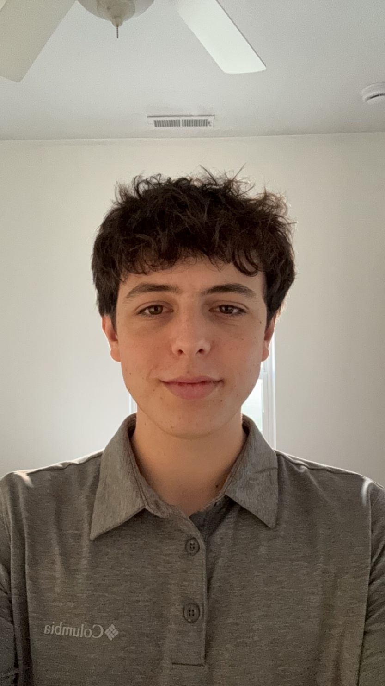

I'm a passionate software engineer graduating from Iowa State University in May 2025. Currently working as a Full-Stack Software Developer Intern at The Mutual Group, I'm always looking for new opportunities to push my limits, solve complex problems, and create meaningful software.
What sets me apart isn't just my technical skills—it's my relentless drive. I thrive in team environments, where I can collaborate, innovate, and lead. I love taking on challenges that force me to think outside the box, and I’m not afraid to put in the extra hours to make sure a project is not just done, but done right.
Beyond coding, I enjoy playing soccer, basketball, working out, doing puzzles, playing videogames and hanging out with my friends!
Education
B.S. in Software Engineering
Iowa State University
Expected Graduation: May 2025
What Drives Me
- Proven Technical Excellence – Consistently deliver high-quality, scalable solutions by combining strong coding skills with a meticulous attention to detail.
- Collaborative Team Player – Excel in cross-functional teams, fostering open communication and driving projects to successful completion through effective collaboration.
- Continuous Learner – Actively pursue professional growth by mastering new technologies, frameworks, and best practices to stay at the forefront of software engineering.
- Innovative Problem-Solver – Passionate about tackling complex technical challenges and designing efficient, elegant solutions that align with business goals.
Languages
Java
Gosu
SQL
C
C++
HTML/CSS/JS
Python
Developer Tools
Git
GuideWire Policy Center
Microsoft SQL Manager
MongoDB
VS Code
Eclipse
Android Studio
Agile Development
Technologies/Frameworks
Bitbucket
Source Tree
GitLab
GitHub
Git Bash
Postman
JUnit
AWS